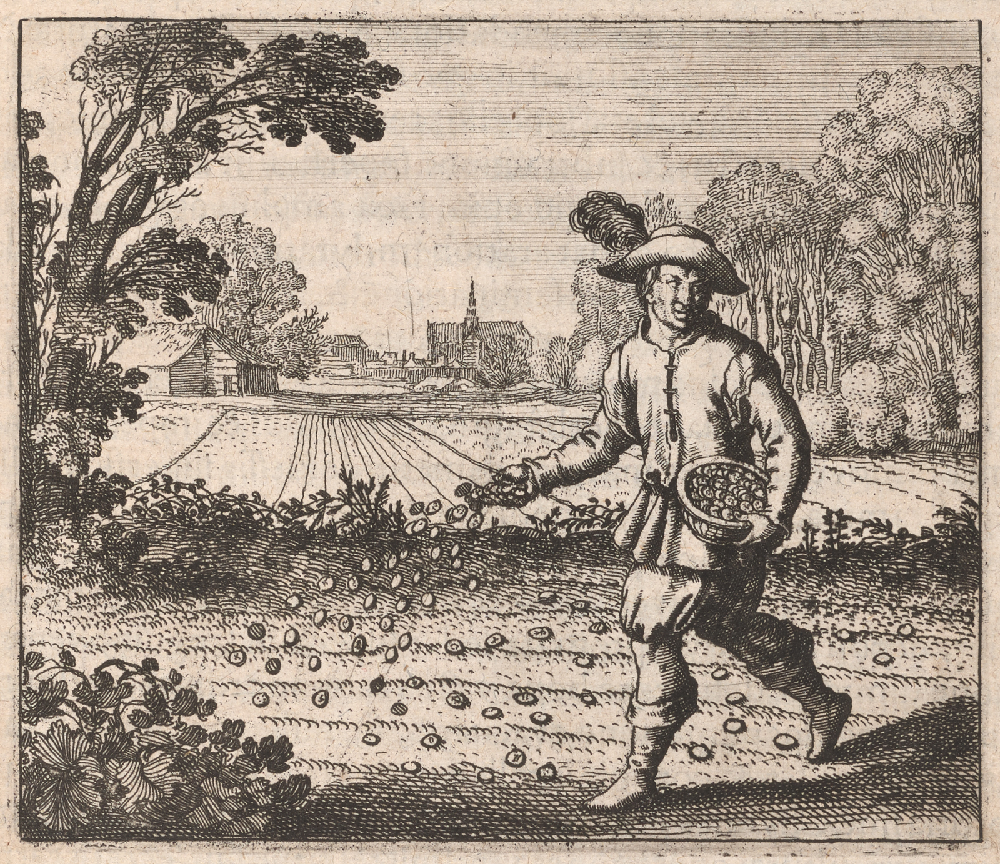

033
Embleme Emblem 6. Of the Secrets of Nature.
Sowe Sow your gold in the white foliated earth.
Emblema VI.De secretis Naturae.
Seminate aurum vestrum in terram albam foliatam.
FUGA VI. in Quarta, infra.
Säet nur Goldt in die weisse geblätterte Erden.

Epigramme Epigram 6.
Rusticks Rustics their seed to th' the fertile earth committ commit,
When with their harrows they have made it fitt fit:
The Sophi thus their golden seed doe do sowe sow
In foliated earth as white as Snow:
This method well observe, and you'le you'll behold,
As in a glasse glass, by wheat, your budding gold.
Epigramma VI.
Ruricolæae pingui mandant sua semina terræae,
Cùm fuerit rastris hæaec foliata suis.
Philosophi niveos aurum docuêre per agros
Spargere, qui folii se levis instar habent:
Hoc ut agas, illud bene respice, namque quod aurum
Germinet, ex tritico videris, ut speculo
VI. Epigrammatis Latini versio Germanica.
Die Ackerleut in die feist Erden sähen ihren Samen /
Wenn si wol zermalmet ist mit eisenen Zänen/
Die Weisen abr[aber] lehren ihr Gold werffen in die Erden/
Den Blättern gleich ganz weiß / das Gold darauß mag werden /
Daß du solches recht machst / schaw auff der [Bauern]Bawren Werck ganz eben /
Dann Gold wachst wie Weizen / und hat sein eignes Leben.
034
e06-01A City sayth says Plato subsists not by Physitian Physician and Physitian Physician, but by Physitian Physician and
husbandman, that is, men of divers diverse functions, but hee he mentions the Husbandman
and Physitian Physician first, because their works are very conspicuous in the imitation,
emendation, and perfection of nature: e06-02for they both take a naturall natural subject,
in which they according to art add some certaine certain things necessary being wanting,
or allso also remove those things which are superfluous: e06-03soe so that the art of both may
(as medicine by Hippocrates) be defined by the addition of defect, and subtract=
tion of superfluity: e06-04for what dos does the Husbandman more than add ploughing, ridging
furrowing, harrowing, dunging or manuring, sowing, etc. to land left by nature, that
is, commit the increase and good successe success to nature, which administreth administers the heat
of the Sunne Sun, and raine rain, and multiplyes multiplies the seeds by them, and promotes them to
standing corne corn soon after to be reaped: e06-05in the meane mean time whilst the herbe herb is
Springing the husbandman weeds out thistles and all impediments, gathers
the corne corn being ripe, takes away things superfluous from it being reaped, namely
straw, chaffe chaff, and such other things: e06-06Soe So allso also a Physitian Physician (as allso also a Chymist in
a different respect) teacheth teaches how to præserve preserve præsent present health to mans body, being
wanting to recover it by severall several remedyes remedies, takes away the morbificke morbific cause,
cures the disease, asswageth assuages symptoms, abates superfluous blood by opening
a veyne vein, being wanting restores it by apointing appointing good order of dyet diet, evacua=
ates noxious humors by purgation, and soe so imitates, supplyes supplies, and amends
nature a thousand ways by the works of the understanding and art; which
being notorious, Chymicall Chymical things are rather to be considered by us: e06-07for Chy=
mistry doth does first declare the operations of agriculture by its secret bounds
and wayes ways of operating: e06-08Husbandmen have land, wherein to sow seed, soe so allso also
the Chymists: They have dung wherewith to manure their ground, soe so
allso also these, without which nothing could be done, nor any successe expected:
They have seed, the multiplication of which they desire: e06-09if Chymists
had not the like, they would (as Lully sayth says) imitate the painter, that
endeavoures endeavors to expresse express the face of a certaine certain man, whome whom hee he had never
seen, nor the image of him: e06-10Husbandmen expect raine rain, and heat of the
Sunne Sun, soe so allso also doe do the Chymists truely truly administer heat convenient to
their worke work, and raine rain: I need say noe no more: e06-11*
duced Ceres, Triptolemus, Osiris, Dionysus, the golden Gods, as relating to Chy=
mistry,
Discourse 6.
e06-01A City sayth says Plato subsists not by Physitian Physician and Physitian Physician, but by Physitian Physician and
husbandman, that is, men of divers diverse functions, but hee he mentions the Husbandman
and Physitian Physician first, because their works are very conspicuous in the imitation,
emendation, and perfection of nature: e06-02for they both take a naturall natural subject,
in which they according to art add some certaine certain things necessary being wanting,
or allso also remove those things which are superfluous: e06-03soe so that the art of both may
(as medicine by Hippocrates) be defined by the addition of defect, and subtract=
tion of superfluity: e06-04for what dos does the Husbandman more than add ploughing, ridging
furrowing, harrowing, dunging or manuring, sowing, etc. to land left by nature, that
is, commit the increase and good successe success to nature, which administreth administers the heat
of the Sunne Sun, and raine rain, and multiplyes multiplies the seeds by them, and promotes them to
standing corne corn soon after to be reaped: e06-05in the meane mean time whilst the herbe herb is
Springing the husbandman weeds out thistles and all impediments, gathers
the corne corn being ripe, takes away things superfluous from it being reaped, namely
straw, chaffe chaff, and such other things: e06-06Soe So allso also a Physitian Physician (as allso also a Chymist in
a different respect) teacheth teaches how to præserve preserve præsent present health to mans body, being
wanting to recover it by severall several remedyes remedies, takes away the morbificke morbific cause,
cures the disease, asswageth assuages symptoms, abates superfluous blood by opening
a veyne vein, being wanting restores it by apointing appointing good order of dyet diet, evacua=
ates noxious humors by purgation, and soe so imitates, supplyes supplies, and amends
nature a thousand ways by the works of the understanding and art; which
being notorious, Chymicall Chymical things are rather to be considered by us: e06-07for Chy=
mistry doth does first declare the operations of agriculture by its secret bounds
and wayes ways of operating: e06-08Husbandmen have land, wherein to sow seed, soe so allso also
the Chymists: They have dung wherewith to manure their ground, soe so
allso also these, without which nothing could be done, nor any successe expected:
They have seed, the multiplication of which they desire: e06-09if Chymists
had not the like, they would (as Lully sayth says) imitate the painter, that
endeavoures endeavors to expresse express the face of a certaine certain man, whome whom hee he had never
seen, nor the image of him: e06-10Husbandmen expect raine rain, and heat of the
Sunne Sun, soe so allso also doe do the Chymists truely truly administer heat convenient to
their worke work, and raine rain: I need say noe no more: e06-11*
*X Chymistry is exactly parallell to agriculture, and its deputy,
which in all things expresseth expresses its offices, but under a most absolute alle=
gory------------
e06-12From hence the Ancients pro=which in all things expresseth expresses its offices, but under a most absolute alle=
gory------------
duced Ceres, Triptolemus, Osiris, Dionysus, the golden Gods, as relating to Chy=
mistry,
035teaching as it were men how to cast the seeds of fruits into their
earth, shewing showing tillage, with the propagation of vines, and use of wine,
all which things the ignorant have interpreted to rusticall rustical operations, but
erroneously: e06-13for those things, which are absconded from the vulgar, and
declared to the Learned under these veils of agriculture, are most abstruse
mysteryes mysteries of nature: e06-14To this end say the Philosophers that their gold must
be sowed upon white foliated earth, as if they meant that the Sowing of corne corn
Should be observed and imitated for example, which the author of the trea *
tise of corne corn and Jodoc. Greverus have most excellently performed in their
descriptions, for they have both most elegantly accomodated accommodated every operation of
agriculture in the producing of corne corn to the semination of gold, or generation of 25Discourse 6.
the tincture: e06-15White earth, because sandy, yeilds yields little fruit to the countrymen, by
whome whom that which is blacke black and fatt fat is more desired, e06-16but the white principally
conduceth conduces to the Philosophers, if it be foliated, that is well præpared prepared, because
they know how to enrich it with their dung, the other not at all: Now sowing is
the propagation of the world, whereby that, which cannot long endure in an
individuall individual, is caused to persist in the Species: e06-17This is in man, animalls animals, and
plants, in these hermaphroditically, in them under two distinct sexes: but in
metalls metals farre far otherwise: for in them a line is made of the flux of a point, a
superficies of the flux of a line, a body of the flux of a superficies: e06-18But
the Starrs Stars produced that point before the line, superficies, and body, because
it is the principle of them all: e06-19Nature added the flux a long time after, that is,
the cælestiall celestial Sunne Sun did in the earth generate a Sonne Son, whome whom Mercury coḿitted committed
to Vulcan and Chiron to be educated, that is, to manuall manual artifice, to be instructed,
even as they write of Achilles, who was held and hardened in fire by his mother
Thetys: e06-20hee he, amongst other things, learned Musicke Music, and the art of playing on the *
Harp from Chiron: e06-21but Achilles being noe no other than the Philosphicall Philosophical subject (
whose Sonne Son was was Pyrrhus with red haire hair, without which two Troy could not be
taken and subdued, as wee we have abundantly demonstrated in our Hieroglyphicks Hieroglyphics
booke 6.) therefore doe do wee we not without reason touch (though cursorily) upon Musicke Music
in this our worke work, where wee we describe Achilles, and his heroicke heroic virtues and en=
terprises: e06-22For if Musicke Music adorned soe so great a Heroe Hero, why may it not allso also
make this our worke work more complete and acceptable: e06-23For the Angells Angels sing (as the
sacred scriptures attest), the heavens sing, as Pythagoras affirmes affirms, and, as the
Psalmist sayth says, declare the glory of God, the Muses and Apollo sing, as
the Poetts Poets, men even infants sing, birds sing, Sheep and geese sing in
musicall musical instruments, if therefore wee we allso also sing, there is reason for it . . .
earth, shewing showing tillage, with the propagation of vines, and use of wine,
all which things the ignorant have interpreted to rusticall rustical operations, but
erroneously: e06-13for those things, which are absconded from the vulgar, and
declared to the Learned under these veils of agriculture, are most abstruse
mysteryes mysteries of nature: e06-14To this end say the Philosophers that their gold must
be sowed upon white foliated earth, as if they meant that the Sowing of corne corn
Should be observed and imitated for example, which the author of the trea *
*?
=tise of corne corn and Jodoc. Greverus have most excellently performed in their
descriptions, for they have both most elegantly accomodated accommodated every operation of
agriculture in the producing of corne corn to the semination of gold, or generation of 25Discourse 6.
the tincture: e06-15White earth, because sandy, yeilds yields little fruit to the countrymen, by
whome whom that which is blacke black and fatt fat is more desired, e06-16but the white principally
conduceth conduces to the Philosophers, if it be foliated, that is well præpared prepared, because
they know how to enrich it with their dung, the other not at all: Now sowing is
the propagation of the world, whereby that, which cannot long endure in an
individuall individual, is caused to persist in the Species: e06-17This is in man, animalls animals, and
plants, in these hermaphroditically, in them under two distinct sexes: but in
metalls metals farre far otherwise: for in them a line is made of the flux of a point, a
superficies of the flux of a line, a body of the flux of a superficies: e06-18But
the Starrs Stars produced that point before the line, superficies, and body, because
it is the principle of them all: e06-19Nature added the flux a long time after, that is,
the cælestiall celestial Sunne Sun did in the earth generate a Sonne Son, whome whom Mercury coḿitted committed
to Vulcan and Chiron to be educated, that is, to manuall manual artifice, to be instructed,
even as they write of Achilles, who was held and hardened in fire by his mother
Thetys: e06-20hee he, amongst other things, learned Musicke Music, and the art of playing on the *
*For this reason sayth says
Ovid. Phyllirides
made the youth
Achilles an excellent
Harper. . . .
Ovid. Phyllirides
made the youth
Achilles an excellent
Harper. . . .
Harp from Chiron: e06-21but Achilles being noe no other than the Philosphicall Philosophical subject (
whose Sonne Son was was Pyrrhus with red haire hair, without which two Troy could not be
taken and subdued, as wee we have abundantly demonstrated in our Hieroglyphicks Hieroglyphics
booke 6.) therefore doe do wee we not without reason touch (though cursorily) upon Musicke Music
in this our worke work, where wee we describe Achilles, and his heroicke heroic virtues and en=
terprises: e06-22For if Musicke Music adorned soe so great a Heroe Hero, why may it not allso also
make this our worke work more complete and acceptable: e06-23For the Angells Angels sing (as the
sacred scriptures attest), the heavens sing, as Pythagoras affirmes affirms, and, as the
Psalmist sayth says, declare the glory of God, the Muses and Apollo sing, as
the Poetts Poets, men even infants sing, birds sing, Sheep and geese sing in
musicall musical instruments, if therefore wee we allso also sing, there is reason for it . . .
DISCURSUS VI.
e06-01Plato civitatem constare dicit no ex medico & medico, sed ex
medico & agricola, hot est, diversarum functionũ[functionum] hominibus: A-
gricolæae verò & medici inprimis meminit, quia horũ[horum] opera sunt val-
dè conspicua in imitatione, emendatione, & perfectione naturæae. e06-02 Nã[Nam]
uterq;[uterque] subjectũ[subjectum] naturale assumit, in quo secundũ[secundum] artẽ[artem] quæaedam addit
necessaria, deficiẽtia[deficientia], vel etiã[etiam] superflua removet: e06-03 Unde utriusq;[utriusque] ars ꝑ[per]
adjectionem defectus & subtractionẽ[subtractionem] superflui (ut ab Hippocrate
medicina) definiri potest: Quid enim facit ampliùs agricola, quàm
ut agro, à natura relictor addat arationem, lyrationẽ[lyrationem], occationẽ[occationem], laetificationẽ[laetificationem] seu stercorationẽ[stercorationem], seminationẽ[seminationem], & reliquam nempe incrementũ[incrementum] & proventũ[proventum] naturę[naturae] committat, quæae calorẽ[calorem] solis & pluviã[pluviam] ad-
ministrat, & his semina multiplicat & in segetes mox sternẽdas[sternendas] pro-
vehit: e06-05 Interim pullulante herbâ agricola tribulos & impedimẽta[impedimenta] o-
mnia removet, segetes maturas demetit, demessis superflua tollit,
Nepe[Nempe] stramina, paleas & ejusmodi alia: e06-06 Ita & medicus (ꝙn[quin] & chymi-
cus diverso respectu) corpori humano sanitatẽ[sanitatem] praesentẽ[praesentem] conservare,
absentẽ[absentem] recuperare diversis remediis instituit, causam morbificiam
tollit, morbũ[morbum] curat, symptomata sedat, superfluũ[superfluum] sanguinẽ[sanguinem] venæaefe-
fectione diminuit, defincientẽ[defincientem] bona victus ratione ordinata restaurat,
humores noxios purgatione evacuat, & sic mille modis naturam i-
mitatur, supplet & corrigit intellectus & artis operibus; quæae cùm
notoria sint, Chymica potiùs nobis consideranda veniunt: e06-07 Chemia
enim agriculturæae operationes inprimis testatur suis secretis termi-
nis & operandi modis: e06-08 Agricolæae habent terram, cui semina insemi-
nent, ita & Chymici: Habent fimũ[fimum], quo læaetificent agros, ita & hi, sine
quo nihil fieret, nec fructus aliquis sperãdus[sperandus] esset: Illi habẽt[habent] semina,
quorũ[quorum] multiplicationẽ[multiplicationem] desiderant. e06-09 Hæaec nisi chymici haberẽt[haberent], imita-
rentur pictorẽ[pictorem] (ut Lullius inquit) exprimere conantẽ[conantem] faciẽ[faciem] cujusdã[cujusdam]
viri, quẽ[quem] ipse nunquã[nunquam] vidisset, nec imaginẽ[imaginem] ejus: e06-10 Agricolæae expectant
pluviã[pluviam] & calorẽ[calorem] solis, sic & reverà chymici calorẽ[calorem] administrãt[administrant] suo o-
peri convenientẽ[convenientem] & pluviã[pluviam]: Quid multis? e06-11 Chemia est omninò paral-
lela agriculturę[agriculturae], ejúsq;[ejusque] vicaria, quæae per omnia ejus vices exprimit, at
sub allegoria absolutissima: e06-12 Hinc antiqui produxerũt[produxerunt] Cererẽ[Cererem], Triptolemũ[Triptolemum], Osiridẽ[Osiridem], Dionysum, Deos aureos, seu ad chemiã[chemiam] spectãtes[spectantes]
DISCURSUS VI.
quasi docẽtes[docentes] mortales semina frugũ[frugum] in terrã[terram] suã[suam] projicere, agriculturã[agriculturam] & vitiũ[vitium] propagationẽ[propagationem], viníq;[vinique] usũ[usum] monstrãtes[monstrantes], quæae omnia ignari
ad rustica opera detorserunt, at falsò: e06-13 Sunt n.[enim] illa arcanissima naturæae
mysteria, quæae hisce agriculturæae velamentis præaevulgo abscondũtur[absconduntur]
& sapiẽtib.[sapientibus] declarãtur[declarantur]: e06-14 Hinc dicũt[dicunt] Philosophi, ꝙ[quod] aurũ[aurum] eorũ[eorum] in terrã[terram]
albã[albam] foliatã[foliatam] seminandũ[seminandum] sit, quasi velint, seminatorẽ[seminatorem] tritici spectandã[spectandam]
esse pro exẽplo[exemplo] & imitandã[imitandam], ꝙ[quod] author tractatus de tritico & Jodoc.[Jodocus]
Greverus optimè in suis descriptionib.[descriptionibus] fecerũt[fecerunt]: Uterq;[Uterque] n.[enim] agricultrę[agricultrae]
operationes singulas in producẽdo[producendo] tritico, auri seminationi seu tin-
cturæae generationi venustissimè accõmodavit[accommodavit]: e06-15 Terra alba, utpote a-
renosa, rusticis parũ[parum] fructus suppeditat, quib.[quibus] nigra & pinguis magis
ad nutũ[nutum]; e06-16 at Philosophis inprimis illa cõfert[confert], si foliata sit, hoc est, bene
præaeparata: quia hi eã[eam] stercorare fimo suo noverũt[noverunt], illi neutiquã[neutiquam]: Est
autẽ[autem] seminatio mundi propagatio, qua id ꝙ[quod] in individuo perdurare
nequit, specie permanere curatur: e06-17 Hæaec est in homine, animalibus &
plantis, in his hermaphroditicè, in illis sub gemino sexu distincto: In
metallis autẽ[autem] longè alio modo: In iis n.[enim] ex puncti fluxu fit linea, ex li-
neæae superficies, ex superficiei corpus: e06-18 Punctũ[Punctum] autẽ[autem] istud astra produxerũt[produxerunt] ante lineã[lineam], superficiem, & corpus, quia est eorũ[eorum] omniũ[omnium] principiũ[principium]: e06-19 Fluxũ[Fluxum] natura addidit longo tẽporis[temporis] spacio interposito, hoc est,
Phœoebus cœoelestis generavit sub terra filiolũ[filiolum], quẽ[quem] Mercurius Vulca-
no educandũ[educandum] obtulit & Chironi, hoc est, artifici manuali, ad erudiẽdũ[erudiendum], quemadmodũ[quemadmodum] de Achille scribũt[scribunt], qui à Thetyde matre sub ignib.[ignibus]
detẽtus[detentus] & induratus fuit: e06-20 A Chirone ille, inter alia, didicit Musicã[Musicam] &
*
Hinc Ovid.[Ovid] Phylli-
rides pue-
rum Cy-
tharæae præae-
fecit A-
chillem.
Hinc Ovid.[Ovid] Phylli-
rides pue-
rum Cy-
tharæae præae-
fecit A-
chillem.
Cytharæae tractandæae artificiũ[artificium]: e06-21 Cùm verò Achilles nihil aliud sit, quàm
subjectũ[subjectum] Philosophicũ[Philosophicum] (cujus filius Pyrrhus rubro capillitio, sine qui-
bus duob.[duobus] Troja expugnari non potuit, ut copiosè in nostris Hiero-
glyphicis libm[libro] 6.[sexto] demõstravimus) ideò[demonstravimus) ideo] Musicã[Musicam] in hoc ipso nostro ope-
re, ubi Achillẽ[Achillem], ejusq́;[ejusque] heroicas virtutes & facta describimus, nõ[non] absq;[absque]
causa (licèt obiter) tractamus: e06-22 Nã[Nam] si Musica ornavit tãtũ[tantum] Heroa, quid
ni & nostrũ[nostrum] hoc opusculũ[opusculum] magis variegatũ[variegatum] & acceptũ[acceptum] reddat: e06-23 Canũt[Canunt]
n.[enim] Angeli (ut sacræae testãtur[testantur] literæae) canũt[canunt] cœoeli, ut Pythagoras statuit,
& enarrãt[enarrant] gloriã[gloriam] Dei, ut Psalmita ait, canũt[canunt] Musæae & Apollo, ut poë-
tæae, canũt[canunt] homines etiã[etiam] infãtes[infantes], canũt[canunt] volucres, canũt[canunt] oves & anseres
in instrumẽtis[instrumentis] musicis, si ergo & nos canamus, non abs re facimus.